CODING AGENTS AS PIXEL WORLD MODELS
traex/DeepSeek-V4.1-Flash · phygen_042
点击播放 · 原生 RGB 像素
逐轮保存的候选
回放视频、检查图与代码变化。
每份候选均可单独播放。实际图片检查记录在下方工具轨迹中。
候选 01播放与检查图
点击播放 · 原生 RGB 像素
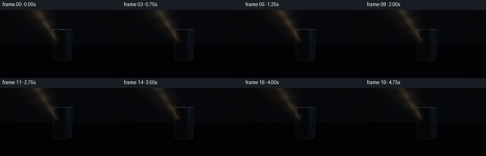
展开代码变化
--- 上一保存版本
+++ 本次保存版本
@@ -0,0 +1,466 @@
+from __future__ import annotations
+
+import math
+import subprocess
+from pathlib import Path
+
+import numpy as np
+from PIL import Image, ImageFilter
+
+import artifact_io
+
+
+CASE_DIR = Path(__file__).resolve().parent
+WIDTH = 256
+HEIGHT = 144
+FRAMES = 20
+FPS = 4.0
+SS = 3
+W = WIDTH * SS
+H = HEIGHT * SS
+
+
+def normalize(v: np.ndarray) -> np.ndarray:
+ return v / np.maximum(np.linalg.norm(v, axis=-1, keepdims=True), 1e-8)
+
+
+def smoothstep(edge0, edge1, x):
+ t = np.clip((x - edge0) / (edge1 - edge0), 0.0, 1.0)
+ return t * t * (3.0 - 2.0 * t)
+
+
+def camera_frame(frame_index: int):
+ phase = 2.0 * math.pi * frame_index / FRAMES
+ cam = np.array(
+ [
+ 0.145 + 0.0045 * math.sin(phase),
+ 1.075 + 0.0030 * math.sin(phase * 0.5 + 0.7),
+ 2.76 - 0.025 * (frame_index / (FRAMES - 1)),
+ ],
+ dtype=np.float64,
+ )
+ target = np.array([0.035, 0.495, 0.0], dtype=np.float64)
+ forward = normalize(target - cam)
+ right = normalize(np.cross(forward, np.array([0.0, 1.0, 0.0])))
+ up = normalize(np.cross(right, forward))
+ return cam, forward, right, up
+
+
+def make_rays(cam, forward, right, up):
+ yy, xx = np.mgrid[0:H, 0:W].astype(np.float64)
+ aspect = W / H
+ tan_half = math.tan(math.radians(43.0) * 0.5)
+ nx = ((xx + 0.5) / W * 2.0 - 1.0) * aspect * tan_half
+ ny = (1.0 - (yy + 0.5) / H * 2.0) * tan_half
+ direction = (
+ forward[None, None, :]
+ + nx[:, :, None] * right[None, None, :]
+ + ny[:, :, None] * up[None, None, :]
+ )
+ return normalize(direction)
+
+
+def project_point(point, cam, forward, right, up):
+ rel = np.asarray(point, dtype=np.float64) - cam
+ depth = float(np.dot(rel, forward))
+ aspect = W / H
+ tan_half = math.tan(math.radians(43.0) * 0.5)
+ sx = (0.5 + 0.5 * np.dot(rel, right) / (depth * aspect * tan_half)) * W
+ sy = (0.5 - 0.5 * np.dot(rel, up) / (depth * tan_half)) * H
+ return np.array([sx, sy])
+
+
+def ray_cylinder(origin, direction, cx=0.075, cz=0.0, radius=0.335, height=0.965):
+ ox = origin[0] - cx
+ oz = origin[2] - cz
+ a = direction[..., 0] ** 2 + direction[..., 2] ** 2
+ b = 2.0 * (ox * direction[..., 0] + oz * direction[..., 2])
+ c = ox * ox + oz * oz - radius * radius
+ disc = b * b - 4.0 * a * c
+ valid = disc > 0.0
+ root = np.sqrt(np.maximum(disc, 0.0))
+ t0 = (-b - root) / np.maximum(2.0 * a, 1e-9)
+ t1 = (-b + root) / np.maximum(2.0 * a, 1e-9)
+ hit = valid & (t0 > 1e-5)
+ t = np.where(hit, t0, np.inf)
+ # The ray origin is outside the can, but keep the far root for correctness.
+ hit_far = valid & ~hit & (t1 > 1e-5)
+ t = np.where(hit_far, t1, t)
+ y = origin[1] + t * direction[..., 1]
+ valid = np.isfinite(t) & (y >= 0.0) & (y <= height)
+ return valid, t
+
+
+def cylinder_occludes(origin, light, cx=0.075, cz=0.0, radius=0.335, height=0.965):
+ origin = np.asarray(origin, dtype=np.float64)
+ delta = light - origin
+ distance = np.linalg.norm(delta, axis=-1)
+ direction = delta / np.maximum(distance[..., None], 1e-8)
+ ox = origin[:, 0] - cx
+ oz = origin[:, 2] - cz
+ a = direction[..., 0] ** 2 + direction[..., 2] ** 2
+ b = 2.0 * (ox * direction[..., 0] + oz * direction[..., 2])
+ c = ox * ox + oz * oz - radius * radius
+ disc = b * b - 4.0 * a * c
+ valid = disc > 0.0
+ root = np.sqrt(np.maximum(disc, 0.0))
+ t0 = (-b - root) / np.maximum(2.0 * a, 1e-9)
+ t1 = (-b + root) / np.maximum(2.0 * a, 1e-9)
+ hit = valid & (t0 > 1e-4) & (t0 < distance)
+ y0 = origin[:, 1] + t0 * direction[..., 1]
+ hit |= valid & (t1 > 1e-4) & (t1 < distance) & (
+ (origin[:, 1] + t1 * direction[..., 1] >= 0.0)
+ & (origin[:, 1] + t1 * direction[..., 1] <= height)
+ )
+ hit &= (y0 >= 0.0) & (y0 <= height)
+ return hit
+
+
+def environment_color(reflection, beam_strength=1.0):
+ r = reflection
+ out = np.zeros_like(r)
+ up = np.clip(r[..., 1], 0.0, 1.0)
+ out += (0.018 + 0.065 * up[..., None]) * np.array([0.48, 0.58, 0.78])
+
+ cool_dir = normalize(np.array([0.75, 0.25, 0.35]))
+ cool = np.clip(r @ cool_dir, 0.0, 1.0) ** 9
+ out += cool[..., None] * np.array([0.11, 0.19, 0.30]) * beam_strength
+
+ warm_dir = normalize(np.array([-0.85, 0.48, -0.25]))
+ warm = np.clip(r @ warm_dir, 0.0, 1.0) ** 10
+ out += warm[..., None] * np.array([0.78, 0.55, 0.32]) * beam_strength
+ return out
+
+
+def render_scene(frame_index: int):
+ phase = 2.0 * math.pi * frame_index / FRAMES
+ cam, forward, right, up = camera_frame(frame_index)
+ rays = make_rays(cam, forward, right, up)
+
+ # A high, slightly rear-left studio lamp creates a diagonal beam and a
+ # shadow that reaches toward the lower edge of frame.
+ light = np.array(
+ [
+ -2.05 + 0.030 * math.sin(phase * 0.8 + 0.3),
+ 3.25 + 0.018 * math.cos(phase * 0.7),
+ -1.36 + 0.018 * math.sin(phase * 0.55 + 1.2),
+ ],
+ dtype=np.float64,
+ )
+ light_target = np.array([0.06, 0.50, 0.0], dtype=np.float64)
+ beam_axis = normalize(light_target - light)
+ light_rgb = np.array([1.00, 0.78, 0.54])
+
+ # Scene intersections.
+ t_side, _ = None, None
+ side_ok, t_side = ray_cylinder(cam, rays)
+
+ denom_top = np.maximum(-rays[..., 1], 1e-8)
+ t_top = (0.965 - cam[1]) / np.where(rays[..., 1] < 0.0, rays[..., 1], -1.0)
+ px = cam[0] + t_top * rays[..., 0] - 0.075
+ pz = cam[2] + t_top * rays[..., 2]
+ top_ok = (rays[..., 1] < 0.0) & (t_top > 1e-5) & (px * px + pz * pz <= 0.335**2)
+ # The recessed lid is a second, subtly inset surface.
+ lid_y = np.where(px * px + pz * pz < 0.296**2, 0.952, 0.965)
+ t_top = (lid_y - cam[1]) / np.where(rays[..., 1] < 0.0, rays[..., 1], -1.0)
+
+ t_floor = np.where(rays[..., 1] < 0.0, -cam[1] / rays[..., 1], np.inf)
+ floor_ok = (t_floor > 1e-5) & np.isfinite(t_floor)
+
+ wall_z = -2.15
+ t_wall = np.where(rays[..., 2] < 0.0, (wall_z - cam[2]) / rays[..., 2], np.inf)
+ wall_ok = (t_wall > 1e-5) & np.isfinite(t_wall)
+
+ t_scene = np.full((H, W), np.inf, dtype=np.float64)
+ material = np.zeros((H, W), dtype=np.uint8) # 1 side, 2 lid, 3 floor, 4 wall
+
+ candidates = [
+ (side_ok, t_side, 1),
+ (top_ok, t_top, 2),
+ (floor_ok, t_floor, 3),
+ (wall_ok, t_wall, 4),
+ ]
+ for valid, t, mat in candidates:
+ closer = valid & (t < t_scene)
+ t_scene = np.where(closer, t, t_scene)
+ material = np.where(closer, mat, material)
+
+ hit = cam[None, None, :] + t_scene[..., None] * rays
+ view = -rays
+ image = np.zeros((H, W, 3), dtype=np.float64)
+
+ # Wall: near-black studio sweep with a little atmospheric separation.
+ wall_mask = material == 4
+ wall_y = hit[..., 1]
+ wall_base = 0.008 + 0.016 * smoothstep(-0.1, 2.4, wall_y)
+ wall_base += 0.010 * np.clip(1.0 - wall_y / 1.6, 0.0, 1.0)
+ wall_col = wall_base[..., None] * np.array([0.62, 0.72, 0.92])
+ wall_col += np.array([0.004, 0.006, 0.010])
+ image[wall_mask] = wall_col[wall_mask]
+
+ # Floor material, spotlight pool, and a true soft shadow from the cylinder.
+ floor_mask = material == 3
+ pfloor = hit[floor_mask]
+ to_light = light[None, :] - pfloor
+ dist_light = np.linalg.norm(to_light, axis=1)
+ ldir = to_light / np.maximum(dist_light[:, None], 1e-8)
+ cosang = ldir @ beam_axis
+ spot = smoothstep(math.cos(math.radians(26.0)), math.cos(math.radians(9.0)), cosang)
+ spot *= 1.0 / (1.0 + 0.035 * dist_light**2)
+
+ # Four nearby lamp samples create a naturally soft cast-shadow edge.
+ shadow = np.zeros_like(dist_light)
+ offsets = np.array(
+ [[0.10, 0.0, 0.10], [-0.10, 0.0, 0.10], [0.10, 0.0, -0.10], [-0.10, 0.0, -0.10]]
+ )
+ for offset in offsets:
+ shadow += cylinder_occludes(pfloor, light[None, :] + offset[None, :]).astype(np.float64)
+ shadow = 1.0 - shadow / len(offsets)
+ shadow = 0.16 + 0.84 * shadow
+
+ floor_rgb = np.array([0.050, 0.055, 0.062])
+ ambient = (0.20 + 0.16 * np.clip(pfloor[:, 1] + 0.4, 0.0, 1.0))[:, None]
+ ambient = ambient * np.array([0.30, 0.38, 0.54])[None, :]
+ diffuse = 0.62 * spot[:, None] * shadow[:, None] * light_rgb[None, :]
+ half = normalize(ldir + np.array([0.0, 1.0, 0.0]))
+ spec = 0.20 * spot * shadow * np.clip(half[:, 1], 0.0, 1.0) ** 32
+
+ # Contact occlusion around the can's base.
+ dx = pfloor[:, 0] - 0.075
+ dz = pfloor[:, 2]
+ radial = np.sqrt(dx * dx + dz * dz)
+ contact = 1.0 - 0.72 * np.exp(-((radial - 0.32) / 0.105) ** 2)
+ contact *= 0.78 + 0.22 * smoothstep(0.32, 0.75, radial)
+ floor_light = (
+ floor_rgb[None, :] * (ambient + diffuse) * contact[:, None]
+ + spec[:, None] * light_rgb[None, :] * 0.34
+ )
+ image[floor_mask] = floor_light
+
+ # Cylinder side: brushed aluminum with warm key and cool rim reflections.
+ side_mask = material == 1
+ pside = hit[side_mask]
+ nside = normalize(np.stack([pside[:, 0] - 0.075, np.zeros(len(pside)), pside[:, 2]], axis=1))
+ vside = view[side_mask]
+ to_light_s = light[None, :] - pside
+ dist_s = np.linalg.norm(to_light_s, axis=1)
+ lside = to_light_s / np.maximum(dist_s[:, None], 1e-8)
+ cos_s = lside @ beam_axis
+ spot_s = smoothstep(math.cos(math.radians(26.0)), math.cos(math.radians(9.0)), cos_s)
+ spot_s *= 1.0 / (1.0 + 0.035 * dist_s**2)
+ ndl = np.clip(np.sum(nside * lside, axis=1), 0.0, 1.0)
+ ndv = np.clip(np.sum(nside * vside, axis=1), 0.0, 1.0)
+ hside = normalize(lside + vside)
+ ndh = np.clip(np.sum(nside * hside, axis=1), 0.0, 1.0)
+ refl = 2.0 * ndv[:, None] * nside - vside
+
+ base_metal = np.array([0.33, 0.355, 0.39])
+ env = environment_color(refl)
+ fresnel = 0.23 + 0.77 * (1.0 - ndv) ** 3.0
+ broad = 0.10 * ndl * spot_s
+ sharp = (0.82 * ndh**72 + 0.13 * ndh**11) * spot_s
+ cool_strip = np.clip(nside[:, 0], 0.0, 1.0) ** 3 * 0.055
+
+ metal = (
+ base_metal[None, :] * (env * 0.78 + 0.026)
+ + fresnel[:, None] * env * 0.56
+ + (broad + sharp)[:, None] * light_rgb[None, :] * 1.15
+ + cool_strip[:, None] * np.array([0.42, 0.68, 1.0])[None, :]
+ )
+
+ # Fine vertical brushing and the pressed top/bottom seams.
+ angle = np.arctan2(pside[:, 2], pside[:, 0] - 0.075)
+ brush = 0.012 * (
+ np.sin(angle * 83.0 + pside[:, 1] * 170.0)
+ + 0.45 * np.sin(angle * 191.0 - pside[:, 1] * 53.0)
+ )
+ seam = np.exp(-((pside[:, 1] - 0.048) / 0.009) ** 2)
+ seam += np.exp(-((pside[:, 1] - 0.928) / 0.008) ** 2)
+ seam_glow = np.exp(-((pside[:, 1] - 0.072) / 0.012) ** 2)
+ metal += brush[:, None] * np.array([0.70, 0.78, 0.92])
+ metal *= (1.0 - 0.24 * seam)[:, None]
+ metal += 0.12 * seam_glow[:, None] * light_rgb[None, :] * (0.3 + spot_s[:, None])
+ image[side_mask] = np.maximum(metal, 0.0)
+
+ # Lid: radial brushing, recessed center, and a narrow polished rim.
+ lid_mask = material == 2
+ plid = hit[lid_mask]
+ lx = plid[:, 0] - 0.075
+ lz = plid[:, 2]
+ lr = np.sqrt(lx * lx + lz * lz)
+ lid_angle = np.arctan2(lz, lx)
+ lid_radial = 0.56 + 0.18 * np.sin(lr * 245.0) * np.exp(-lr * 5.0)
+ lid_radial += 0.05 * np.sin(lid_angle * 37.0)
+ rim = np.exp(-((lr - 0.322) / 0.008) ** 2)
+ inner_rim = np.exp(-((lr - 0.292) / 0.006) ** 2)
+
+ n_lid = np.zeros_like(plid)
+ n_lid[:, 1] = 1.0
+ v_lid = view[lid_mask]
+ h_lid = normalize(np.array([-0.55, 0.72, -0.35])[None, :] + v_lid)
+ lid_spec = np.clip(np.sum(n_lid * h_lid, axis=1), 0.0, 1.0) ** 55
+ lid_col = (
+ lid_radial[:, None] * np.array([0.135, 0.150, 0.172])[None, :]
+ + lid_spec[:, None] * light_rgb[None, :] * 0.58
+ + rim[:, None] * np.array([0.58, 0.53, 0.45])[None, :]
+ + inner_rim[:, None] * np.array([0.18, 0.20, 0.23])[None, :]
+ )
+
+ # Pull tab, drawn in lid coordinates. It reads as a small dark ring at this scale.
+ tab_x = lx + 0.015
+ tab_z = lz + 0.055
+ tab_outer = (tab_x / 0.080) ** 2 + (tab_z / 0.126) ** 2
+ tab_inner = (tab_x / 0.051) ** 2 + (tab_z / 0.088) ** 2
+ tab_ring = smoothstep(0.82, 1.02, tab_outer) * (1.0 - smoothstep(0.78, 0.98, tab_inner))
+ lid_col *= (1.0 - 0.42 * tab_ring)[:, None]
+ lid_col += 0.11 * tab_ring[:, None] * np.array([0.75, 0.78, 0.80])[None, :]
+ image[lid_mask] = lid_col
+
+ # Air and beam scattering are composited in high-resolution screen space.
+ beam_mask = make_beam_mask(frame_index, cam, forward, right, up)
+ beam_gain = 0.23 + 0.018 * math.sin(phase * 0.9 + 0.6)
+ image += beam_mask[..., None] * light_rgb[None, None, :] * beam_gain
+
+ # Dust motes drift through the shaft, with a few brighter near-lamp sparks.
+ dust = make_dust(frame_index, beam_mask)
+ image += dust[..., None] * np.array([1.0, 0.82, 0.61])[None, None, :]
+
+ # Tone map, gentle bloom, lens vignette, and restrained film grain.
+ image = np.maximum(image, 0.0)
+ mapped = image / (1.0 + image * 0.68)
+ mapped = np.power(np.clip(mapped, 0.0, 1.0), 0.86)
+
+ bright = np.clip((mapped - 0.57) / 0.43, 0.0, 1.0)
+ bloom_small = Image.fromarray(np.uint8(np.clip(bright * 255, 0, 255))).filter(
+ ImageFilter.GaussianBlur(5.0 * SS)
+ )
+ bloom_large = Image.fromarray(np.uint8(np.clip(bright * 255, 0, 255))).filter(
+ ImageFilter.GaussianBlur(13.0 * SS)
+ )
+ bloom = (
+ 0.050 * np.asarray(bloom_small, dtype=np.float64) / 255.0
+ + 0.035 * np.asarray(bloom_large, dtype=np.float64) / 255.0
+ )
+ mapped += bloom * np.array([1.0, 0.84, 0.66])[None, None, :]
+
+ yy, xx = np.mgrid[0:H, 0:W]
+ vx = (xx / W - 0.5) * 1.15
+ vy = (yy / H - 0.49) * 1.35
+ vignette = np.clip(1.0 - 0.40 * (vx * vx + vy * vy), 0.60, 1.0)
+ mapped *= vignette[..., None]
+
+ rng = np.random.default_rng(9100 + frame_index)
+ grain = rng.normal(0.0, 0.0085, (H, W, 1))
+ mapped += grain * (0.45 + 0.55 * np.clip(mapped.mean(axis=2, keepdims=True), 0.0, 1.0))
+
+ # Downsample in linear-ish display space to keep edges clean at 256x144.
+ out = Image.fromarray(np.uint8(np.clip(mapped * 255.0, 0, 255))).resize(
+ (WIDTH, HEIGHT), Image.Resampling.LANCZOS
+ )
+ return np.asarray(out, dtype=np.uint8)
+
+
+def make_beam_mask(frame_index, cam, forward, right, up):
+ phase = 2.0 * math.pi * frame_index / FRAMES
+ light = np.array(
+ [
+ -2.05 + 0.030 * math.sin(phase * 0.8 + 0.3),
+ 3.25 + 0.018 * math.cos(phase * 0.7),
+ -1.36 + 0.018 * math.sin(phase * 0.55 + 1.2),
+ ]
+ )
+ # The visible shaft ends where it catches the upper-left face of the can.
+ target = np.array([-0.115, 0.615, -0.075])
+ p0 = project_point(light, cam, forward, right, up)
+ p1 = project_point(target, cam, forward, right, up)
+ seg = p1 - p0
+ length2 = max(float(seg @ seg), 1e-8)
+ yy, xx = np.mgrid[0:H, 0:W].astype(np.float64)
+ qx = xx - p0[0]
+ qy = yy - p0[1]
+ along = np.clip((qx * seg[0] + qy * seg[1]) / length2, 0.0, 1.0)
+ near_x = p0[0] + along * seg[0]
+ near_y = p0[1] + along * seg[1]
+ dist = np.sqrt((xx - near_x) ** 2 + (yy - near_y) ** 2)
+ width = (2.0 + 17.0 * (1.0 - along)) * SS
+ core = np.exp(-(dist / np.maximum(width, 1e-4)) ** 2 * 1.65)
+ wide = np.exp(-(dist / np.maximum(width * 2.8, 1e-4)) ** 2)
+ # Fade in at the lamp and bloom out at the impact point.
+ envelope = smoothstep(0.02, 0.18, along) * (1.0 - 0.20 * smoothstep(0.78, 1.0, along))
+ haze = (0.62 * core + 0.38 * wide) * envelope
+ ripple = 0.84 + 0.16 * np.sin(yy * 0.083 + xx * 0.021 + phase * 0.8)
+ ripple *= 0.94 + 0.06 * np.sin(xx * 0.041 - yy * 0.057 - phase * 0.45)
+ return np.clip(haze * ripple, 0.0, 1.0)
+
+
+def add_glow(buf, x, y, radius, strength):
+ x0 = max(0, int(x - radius * 3.0))
+ x1 = min(W, int(x + radius * 3.0) + 1)
+ y0 = max(0, int(y - radius * 3.0))
+ y1 = min(H, int(y + radius * 3.0) + 1)
+ if x0 >= x1 or y0 >= y1:
+ return
+ yy, xx = np.mgrid[y0:y1, x0:x1]
+ spot = np.exp(-(((xx - x) ** 2 + (yy - y) ** 2) / max(radius * radius, 1e-4)))
+ buf[y0:y1, x0:x1] += strength * spot
+
+
+def make_dust(frame_index, beam_mask):
+ phase = 2.0 * math.pi * frame_index / FRAMES
+ rng = np.random.default_rng(421)
+ dust = np.zeros((H, W), dtype=np.float64)
+ for i in range(38):
+ base_x = rng.uniform(0.18, 0.70) * W
+ base_y = rng.uniform(0.04, 0.70) * H
+ speed = rng.uniform(0.35, 1.0)
+ x = base_x + (8.0 + 9.0 * speed) * SS * math.sin(phase * 0.48 * speed + i * 1.7)
+ y = base_y + (2.5 + 5.0 * speed) * SS * (0.5 + 0.5 * math.sin(phase * 0.55 + i * 0.9))
+ x = (x + 0.5) % W
+ radius = rng.uniform(0.45, 1.15) * SS
+ strength = rng.uniform(0.010, 0.050)
+ # Keep motes concentrated around the lit air, not uniformly across frame.
+ xi = int(np.clip(x, 0, W - 1))
+ yi = int(np.clip(y, 0, H - 1))
+ strength *= 0.32 + 0.95 * beam_mask[yi, xi]
+ add_glow(dust, x, y, radius, strength)
+ return np.clip(dust, 0.0, 0.20)
+
+
+def main():
+ frames = np.empty((FRAMES, HEIGHT, WIDTH, 3), dtype=np.uint8)
+ for index in range(FRAMES):
+ frames[index] = render_scene(index)
+ print(f"rendered {index + 1:02d}/{FRAMES}", flush=True)
+
+ artifact_io.save(frames, CASE_DIR)
+
+ # A convenient directly-playable deliverable alongside the required frame artifacts.
+ try:
+ subprocess.run(
+ [
+ "ffmpeg",
+ "-y",
+ "-loglevel",
+ "error",
+ "-framerate",
+ str(int(FPS)),
+ "-i",
+ str(CASE_DIR / "frames" / "%02d.png"),
+ "-c:v",
+ "libx264",
+ "-pix_fmt",
+ "yuv420p",
+ "-crf",
+ "17",
+ "-movflags",
+ "+faststart",
+ str(CASE_DIR / "video.mp4"),
+ ],
+ check=False,
+ )
+ except FileNotFoundError:
+ pass
+
+
+if __name__ == "__main__":
+ main()
候选 02播放与检查图
点击播放 · 原生 RGB 像素
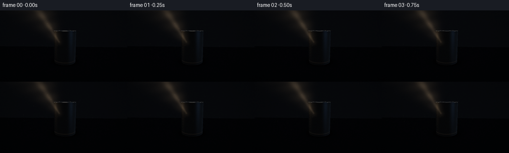
展开代码变化
--- 上一保存版本
+++ 本次保存版本
@@ -33,13 +33,13 @@
phase = 2.0 * math.pi * frame_index / FRAMES
cam = np.array(
[
- 0.145 + 0.0045 * math.sin(phase),
- 1.075 + 0.0030 * math.sin(phase * 0.5 + 0.7),
- 2.76 - 0.025 * (frame_index / (FRAMES - 1)),
+ 0.15 + 0.0040 * math.sin(phase),
+ 1.35 + 0.0028 * math.sin(phase * 0.5 + 0.7),
+ 3.36 - 0.028 * (frame_index / (FRAMES - 1)),
],
dtype=np.float64,
)
- target = np.array([0.035, 0.495, 0.0], dtype=np.float64)
+ target = np.array([0.035, 0.52, 0.0], dtype=np.float64)
forward = normalize(target - cam)
right = normalize(np.cross(forward, np.array([0.0, 1.0, 0.0])))
up = normalize(np.cross(right, forward))
@@ -147,7 +147,7 @@
],
dtype=np.float64,
)
- light_target = np.array([0.06, 0.50, 0.0], dtype=np.float64)
+ light_target = np.array([0.03, 0.56, 0.0], dtype=np.float64)
beam_axis = normalize(light_target - light)
light_rgb = np.array([1.00, 0.78, 0.54])
@@ -218,10 +218,10 @@
shadow = 1.0 - shadow / len(offsets)
shadow = 0.16 + 0.84 * shadow
- floor_rgb = np.array([0.050, 0.055, 0.062])
+ floor_rgb = np.array([0.038, 0.042, 0.048])
ambient = (0.20 + 0.16 * np.clip(pfloor[:, 1] + 0.4, 0.0, 1.0))[:, None]
ambient = ambient * np.array([0.30, 0.38, 0.54])[None, :]
- diffuse = 0.62 * spot[:, None] * shadow[:, None] * light_rgb[None, :]
+ diffuse = 0.48 * spot[:, None] * shadow[:, None] * light_rgb[None, :]
half = normalize(ldir + np.array([0.0, 1.0, 0.0]))
spec = 0.20 * spot * shadow * np.clip(half[:, 1], 0.0, 1.0) ** 32
@@ -233,7 +233,7 @@
contact *= 0.78 + 0.22 * smoothstep(0.32, 0.75, radial)
floor_light = (
floor_rgb[None, :] * (ambient + diffuse) * contact[:, None]
- + spec[:, None] * light_rgb[None, :] * 0.34
+ + spec[:, None] * light_rgb[None, :] * 0.27
)
image[floor_mask] = floor_light
@@ -318,7 +318,7 @@
# Air and beam scattering are composited in high-resolution screen space.
beam_mask = make_beam_mask(frame_index, cam, forward, right, up)
- beam_gain = 0.23 + 0.018 * math.sin(phase * 0.9 + 0.6)
+ beam_gain = 0.17 + 0.014 * math.sin(phase * 0.9 + 0.6)
image += beam_mask[..., None] * light_rgb[None, None, :] * beam_gain
# Dust motes drift through the shaft, with a few brighter near-lamp sparks.
@@ -382,9 +382,9 @@
near_x = p0[0] + along * seg[0]
near_y = p0[1] + along * seg[1]
dist = np.sqrt((xx - near_x) ** 2 + (yy - near_y) ** 2)
- width = (2.0 + 17.0 * (1.0 - along)) * SS
- core = np.exp(-(dist / np.maximum(width, 1e-4)) ** 2 * 1.65)
- wide = np.exp(-(dist / np.maximum(width * 2.8, 1e-4)) ** 2)
+ width = (1.8 + 12.5 * (1.0 - along)) * SS
+ core = np.exp(-(dist / np.maximum(width, 1e-4)) ** 2 * 1.9)
+ wide = np.exp(-(dist / np.maximum(width * 2.5, 1e-4)) ** 2)
# Fade in at the lamp and bloom out at the impact point.
envelope = smoothstep(0.02, 0.18, along) * (1.0 - 0.20 * smoothstep(0.78, 1.0, along))
haze = (0.62 * core + 0.38 * wide) * envelope
候选 03播放与检查图

候选 04播放与检查图
点击播放 · 原生 RGB 像素

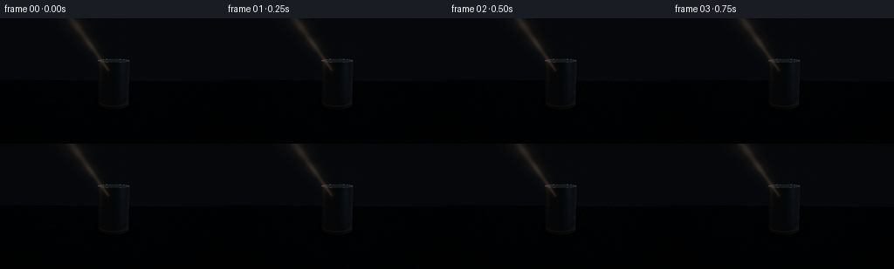
展开代码变化
--- 上一保存版本
+++ 本次保存版本
@@ -289,10 +289,10 @@
lz = plid[:, 2]
lr = np.sqrt(lx * lx + lz * lz)
lid_angle = np.arctan2(lz, lx)
- lid_radial = 0.56 + 0.18 * np.sin(lr * 245.0) * np.exp(-lr * 5.0)
- lid_radial += 0.05 * np.sin(lid_angle * 37.0)
- rim = np.exp(-((lr - 0.322) / 0.008) ** 2)
- inner_rim = np.exp(-((lr - 0.292) / 0.006) ** 2)
+ lid_radial = 0.54 + 0.10 * np.sin(lr * 245.0) * np.exp(-lr * 5.0)
+ lid_radial += 0.032 * np.sin(lid_angle * 37.0)
+ rim = np.exp(-((lr - 0.322) / 0.007) ** 2)
+ inner_rim = np.exp(-((lr - 0.292) / 0.005) ** 2)
n_lid = np.zeros_like(plid)
n_lid[:, 1] = 1.0
@@ -300,10 +300,10 @@
h_lid = normalize(np.array([-0.55, 0.72, -0.35])[None, :] + v_lid)
lid_spec = np.clip(np.sum(n_lid * h_lid, axis=1), 0.0, 1.0) ** 55
lid_col = (
- lid_radial[:, None] * np.array([0.135, 0.150, 0.172])[None, :]
- + lid_spec[:, None] * light_rgb[None, :] * 0.58
- + rim[:, None] * np.array([0.58, 0.53, 0.45])[None, :]
- + inner_rim[:, None] * np.array([0.18, 0.20, 0.23])[None, :]
+ lid_radial[:, None] * np.array([0.118, 0.132, 0.151])[None, :]
+ + lid_spec[:, None] * light_rgb[None, :] * 0.42
+ + rim[:, None] * np.array([0.39, 0.36, 0.31])[None, :]
+ + inner_rim[:, None] * np.array([0.13, 0.15, 0.18])[None, :]
)
# Pull tab, drawn in lid coordinates. It reads as a small dark ring at this scale.
@@ -312,8 +312,8 @@
tab_outer = (tab_x / 0.080) ** 2 + (tab_z / 0.126) ** 2
tab_inner = (tab_x / 0.051) ** 2 + (tab_z / 0.088) ** 2
tab_ring = smoothstep(0.82, 1.02, tab_outer) * (1.0 - smoothstep(0.78, 0.98, tab_inner))
- lid_col *= (1.0 - 0.42 * tab_ring)[:, None]
- lid_col += 0.11 * tab_ring[:, None] * np.array([0.75, 0.78, 0.80])[None, :]
+ lid_col *= (1.0 - 0.30 * tab_ring)[:, None]
+ lid_col += 0.055 * tab_ring[:, None] * np.array([0.75, 0.78, 0.80])[None, :]
image[lid_mask] = lid_col
# Air and beam scattering are composited in high-resolution screen space.
@@ -370,7 +370,7 @@
]
)
# The visible shaft ends where it catches the upper-left face of the can.
- target = np.array([-0.115, 0.615, -0.075])
+ target = np.array([-0.055, 0.735, -0.17])
p0 = project_point(light, cam, forward, right, up)
p1 = project_point(target, cam, forward, right, up)
seg = p1 - p0
@@ -382,12 +382,12 @@
near_x = p0[0] + along * seg[0]
near_y = p0[1] + along * seg[1]
dist = np.sqrt((xx - near_x) ** 2 + (yy - near_y) ** 2)
- width = (1.8 + 12.5 * (1.0 - along)) * SS
- core = np.exp(-(dist / np.maximum(width, 1e-4)) ** 2 * 1.9)
- wide = np.exp(-(dist / np.maximum(width * 2.5, 1e-4)) ** 2)
+ width = (1.5 + 8.7 * (1.0 - along)) * SS
+ core = np.exp(-(dist / np.maximum(width, 1e-4)) ** 2 * 2.0)
+ wide = np.exp(-(dist / np.maximum(width * 2.25, 1e-4)) ** 2)
# Fade in at the lamp and bloom out at the impact point.
- envelope = smoothstep(0.02, 0.18, along) * (1.0 - 0.20 * smoothstep(0.78, 1.0, along))
- haze = (0.62 * core + 0.38 * wide) * envelope
+ envelope = smoothstep(0.02, 0.18, along) * (1.0 - 0.08 * smoothstep(0.80, 1.0, along))
+ haze = (0.72 * core + 0.28 * wide) * envelope
ripple = 0.84 + 0.16 * np.sin(yy * 0.083 + xx * 0.021 + phase * 0.8)
ripple *= 0.94 + 0.06 * np.sin(xx * 0.041 - yy * 0.057 - phase * 0.45)
return np.clip(haze * ripple, 0.0, 1.0)
候选 05播放与检查图
点击播放 · 原生 RGB 像素
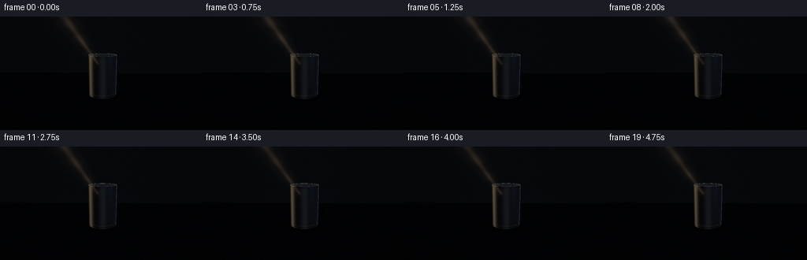
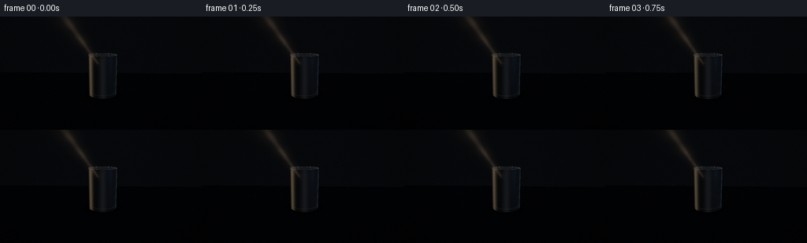
展开代码变化
--- 上一保存版本
+++ 本次保存版本
@@ -218,10 +218,10 @@
shadow = 1.0 - shadow / len(offsets)
shadow = 0.16 + 0.84 * shadow
- floor_rgb = np.array([0.038, 0.042, 0.048])
+ floor_rgb = np.array([0.047, 0.052, 0.059])
ambient = (0.20 + 0.16 * np.clip(pfloor[:, 1] + 0.4, 0.0, 1.0))[:, None]
ambient = ambient * np.array([0.30, 0.38, 0.54])[None, :]
- diffuse = 0.48 * spot[:, None] * shadow[:, None] * light_rgb[None, :]
+ diffuse = 0.62 * spot[:, None] * shadow[:, None] * light_rgb[None, :]
half = normalize(ldir + np.array([0.0, 1.0, 0.0]))
spec = 0.20 * spot * shadow * np.clip(half[:, 1], 0.0, 1.0) ** 32
@@ -270,6 +270,12 @@
# Fine vertical brushing and the pressed top/bottom seams.
angle = np.arctan2(pside[:, 2], pside[:, 0] - 0.075)
+ key_band = np.exp(-((angle - 2.50) / 0.22) ** 2)
+ rim_band = np.exp(-((angle - 0.18) / 0.13) ** 2)
+ face_band = np.exp(-((angle - 1.52) / 0.24) ** 2)
+ metal += key_band[:, None] * np.array([0.30, 0.245, 0.17])[None, :]
+ metal += rim_band[:, None] * np.array([0.12, 0.16, 0.22])[None, :]
+ metal += face_band[:, None] * np.array([0.045, 0.053, 0.065])[None, :]
brush = 0.012 * (
np.sin(angle * 83.0 + pside[:, 1] * 170.0)
+ 0.45 * np.sin(angle * 191.0 - pside[:, 1] * 53.0)
候选 06播放与检查图
点击播放 · 原生 RGB 像素
展开代码变化
--- 上一保存版本
+++ 本次保存版本
@@ -204,7 +204,7 @@
to_light = light[None, :] - pfloor
dist_light = np.linalg.norm(to_light, axis=1)
ldir = to_light / np.maximum(dist_light[:, None], 1e-8)
- cosang = ldir @ beam_axis
+ cosang = ldir @ (-beam_axis)
spot = smoothstep(math.cos(math.radians(26.0)), math.cos(math.radians(9.0)), cosang)
spot *= 1.0 / (1.0 + 0.035 * dist_light**2)
@@ -245,7 +245,7 @@
to_light_s = light[None, :] - pside
dist_s = np.linalg.norm(to_light_s, axis=1)
lside = to_light_s / np.maximum(dist_s[:, None], 1e-8)
- cos_s = lside @ beam_axis
+ cos_s = lside @ (-beam_axis)
spot_s = smoothstep(math.cos(math.radians(26.0)), math.cos(math.radians(9.0)), cos_s)
spot_s *= 1.0 / (1.0 + 0.035 * dist_s**2)
ndl = np.clip(np.sum(nside * lside, axis=1), 0.0, 1.0)
候选 07播放与检查图
候选 08播放与检查图
点击播放 · 原生 RGB 像素

展开代码变化
--- 上一保存版本
+++ 本次保存版本
@@ -335,6 +335,7 @@
image = np.maximum(image, 0.0)
mapped = image / (1.0 + image * 0.68)
mapped = np.power(np.clip(mapped, 0.0, 1.0), 0.86)
+ mapped *= 1.65
bright = np.clip((mapped - 0.57) / 0.43, 0.0, 1.0)
bloom_small = Image.fromarray(np.uint8(np.clip(bright * 255, 0, 255))).filter(
候选 09播放与检查图
点击播放 · 原生 RGB 像素

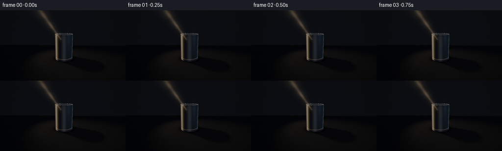
展开代码变化
--- 上一保存版本
+++ 本次保存版本
@@ -468,6 +468,17 @@
except FileNotFoundError:
pass
+ images = [Image.fromarray(frame) for frame in frames]
+ images[0].save(
+ CASE_DIR / "video.webp",
+ save_all=True,
+ append_images=images[1:],
+ duration=round(1000 / FPS),
+ loop=0,
+ quality=92,
+ method=6,
+ )
+
if __name__ == "__main__":
main()
可观测工具轨迹
实际执行的命令与返回图片。
命令 1exit 0
/bin/bash -c "sed -n '1,240p' GENERATION_RULES.md"
命令 2exit 0
/bin/bash -c 'cat prompt.txt'
命令 3exit 0
/bin/bash -c 'cat task_spec.json'
命令 4exit 0
/bin/bash -c "find . -maxdepth 2 -type f -printf '%p\\n' | sort"
命令 5exit 0
/bin/bash -c "sed -n '1,260p' artifact_io.py"
命令 6exit 1
/bin/bash -c 'python generate.py'
命令 7exit 1
/bin/bash -c 'python generate.py'
命令 8exit 0
/bin/bash -c 'python generate.py'
命令 9exit 0
/bin/bash -c "python - <<'PY'
from PIL import Image
im=Image.open('frames/00.png')
im.resize((1024,576), Image.Resampling.NEAREST).save('.tmp/frame00_big.png')
PY"命令 10exit 0
/bin/bash -c "python - <<'PY'
import generate, numpy as np
for f in [0,19]:
c,fo,r,u=generate.camera_frame(f)
print('frame',f)
for p in [(-.2,0,0),(.35,0,0),(-.2,.8,0),(.35,.8,0),(0.075,.8,0),(-.3,0,-.3),(.5,0,.5),(-1.8,0,1)]:
print(p, generate.project_point(p,c,fo,r,u)/generate.SS)
PY"命令 11exit 0
/bin/bash -c 'python generate.py'
命令 12exit 0
/bin/bash -c "python - <<'PY'
from PIL import Image
im=Image.open('frames/00.png')
im.resize((1024,576), Image.Resampling.NEAREST).save('.tmp/frame00_rev_big.png')
PY"命令 13exit 0
/bin/bash -c "python - <<'PY' import generate c,f,r,u=generate.camera_frame(0) for p in [(-.115,.615,-.075),(-.12,.72,-.2),(0.075,.7,0),(0.075,.965,0),(-2.05,3.25,-1.36)]: print(p, generate.project_point(p,c,f,r,u)/3) PY"
命令 14exit 0
/bin/bash -c 'python generate.py'
命令 15exit 2
/bin/bash -c "python - <<'PY'
from PIL import Image
import numpy as np
im=Image.open('frames/00.png')
im.resize((1024,576), Image.Resampling.NEAREST).save('.tmp/frame00_final_big.png')
a=np.asarray(im)
print('frame00 min/max/mean:', a.min(), a.max(), round(float(a.mean()),2))
print('frame19 mean:', round(float(np.asarray(Image.open('frames/19.png')).mean()),2))
PY
ffprobe -v error -show_entries stream=codec_name,width,height,r_frame_rate,nb_frames,duration -of default=noprint_wrappers=1 video.mp4
ls -lh video.mp4 pixels.npz index.html inspection.png"命令 16exit 0
/bin/bash -c "python - <<'PY'
from PIL import Image
import numpy as np
a=np.asarray(Image.open('frames/00.png')).astype(float)
for name,ys,xs in [('can',slice(45,102),slice(108,153)),('beam',slice(0,55),slice(60,125)),('shadow',slice(100,132),slice(125,210)),('background',slice(10,40),slice(180,250))]:
b=a[ys,xs]
print(name, 'mean',b.mean(axis=(0,1)).round(1), 'max',b.max(axis=(0,1)).round(1), 'p95',np.percentile(b,95,axis=(0,1)).round(1))
PY"命令 17exit 0
/bin/bash -c 'python generate.py'
命令 18exit 0
/bin/bash -c "python - <<'PY'
from PIL import Image
import numpy as np
im=Image.open('frames/00.png')
im.resize((1024,576), Image.Resampling.NEAREST).save('.tmp/frame00_contrast_big.png')
a=np.asarray(im).astype(float)
for name,ys,xs in [('can',slice(45,102),slice(108,153)),('beam',slice(0,55),slice(60,125)),('shadow',slice(100,132),slice(125,210)),('background',slice(10,40),slice(180,250))]:
b=a[ys,xs]
print(name, 'mean',b.mean(axis=(0,1)).round(1), 'p95',np.percentile(b,95,axis=(0,1)).round(1))
PY"命令 19exit 0
/bin/bash -c "python - <<'PY'
from PIL import Image
import numpy as np
a=np.asarray(Image.open('frames/00.png')).astype(np.float32)
for gain,name in [(2.5,'bright'),(4.0,'brighter')]:
b=np.clip(a*gain,0,255).astype(np.uint8)
Image.fromarray(b).resize((1024,576), Image.Resampling.NEAREST).save('.tmp/frame00_'+name+'.png')
PY"命令 20exit 0
/bin/bash -c "python - <<'PY'
from PIL import Image
import numpy as np
a=np.asarray(Image.open('frames/00.png')).astype(np.float32)
# Shadow diagnostic: same dark floor without cylinder occlusion.
import generate
c,f,r,u=generate.camera_frame(0)
rays=generate.make_rays(c,f,r,u)
t=np.where(rays[...,1]<0,-c[1]/rays[...,1],np.inf)
h=c[None,None,:]+t[...,None]*rays
print('floor samples (x,y,rgb):')
for x,y in [(160,110),(175,115),(195,120),(220,124),(110,115),(90,108)]:
print(x,y,np.asarray(Image.open('frames/00.png'))[y,x].tolist(), 'world',h[y*3+1,x*3+1].round(2))
PY"命令 21exit 0
/bin/bash -c "python - <<'PY' import generate import numpy as np c,f,r,u=generate.camera_frame(0) rays=generate.make_rays(c,f,r,u) t=np.where(rays[...,1]<0,-c[1]/rays[...,1],np.inf) h=c[None,None,:]+t[...,None]*rays light=np.array([-2.05,3.25,-1.36]); target=np.array([0.03,.56,0]); axis=generate.normalize(target-light) for x,y in [(160,110),(175,115),(195,120),(220,124),(110,115),(90,108),(130,130),(60,135)]: p=h[y*3+1,x*3+1] d=light-p;d/=np.linalg.norm(d);ang=np.degrees(np.arccos(d@axis)) print((x,y),'p',p.round(2),'angle',round(ang,1),'shadow',generate.cylinder_occludes(p[None,:],light[None,:])[0]) PY"
命令 22exit 0
/bin/bash -c 'python generate.py'
命令 23exit 0
/bin/bash -c "python - <<'PY'
from PIL import Image
import numpy as np
im=Image.open('frames/00.png')
im.resize((1024,576), Image.Resampling.NEAREST).save('.tmp/frame00_lightfix_big.png')
a=np.asarray(im).astype(float)
for name,ys,xs in [('can',slice(45,102),slice(108,153)),('beam',slice(0,55),slice(60,125)),('shadow',slice(100,132),slice(125,210)),('background',slice(10,40),slice(180,250))]:
b=a[ys,xs]
print(name, 'mean',b.mean(axis=(0,1)).round(1), 'p95',np.percentile(b,95,axis=(0,1)).round(1))
PY"命令 24exit 0
/bin/bash -c "python - <<'PY' import generate import numpy as np c,f,r,u=generate.camera_frame(0) rays=generate.make_rays(c,f,r,u) t=np.where(rays[...,1]<0,-c[1]/rays[...,1],np.inf) h=c[None,None,:]+t[...,None]*rays light=np.array([-2.05,3.25,-1.36]); target=np.array([0.03,.56,0]); axis=generate.normalize(target-light) for x,y in [(160,110),(175,115),(195,120),(220,124),(110,115),(90,108),(130,130),(60,135)]: p=h[y*3+1,x*3+1] d=light-p;d/=np.linalg.norm(d);ang=np.degrees(np.arccos(d@(-axis))) print((x,y),'p',p.round(2),'angle',round(ang,1),'shadow',generate.cylinder_occludes(p[None,:],light[None,:])[0]) PY"
命令 25exit 0
/bin/bash -c "python - <<'PY'
from PIL import Image, ImageDraw
import numpy as np
im=Image.open('frames/00.png')
out=Image.new('RGB',(256*3,144+18),(24,26,30)); d=ImageDraw.Draw(out)
for i,(g,label) in enumerate([(1.0,'current'),(1.8,'gain 1.8'),(2.3,'gain 2.3')]):
a=np.clip(np.asarray(im).astype(float)*g,0,255).astype(np.uint8)
out.paste(Image.fromarray(a),(i*256,18));d.text((i*256+5,3),label,fill='white')
out.resize((1536,324),Image.Resampling.NEAREST).save('.tmp/exposure_compare.png')
PY"命令 26exit 0
/bin/bash -c 'python generate.py'
命令 27exit 0
/bin/bash -c "python - <<'PY'
from PIL import Image
im=Image.open('frames/00.png')
im.resize((1024,576), Image.Resampling.NEAREST).save('.tmp/frame00_final2_big.png')
PY"命令 28exit 0
/bin/bash -c 'python generate.py'
命令 29exit 0
/bin/bash -c "python - <<'PY'
from pathlib import Path
from PIL import Image
import numpy as np
frames=sorted(Path('frames').glob('*.png'))
assert len(frames)==20, len(frames)
arr=np.stack([np.asarray(Image.open(p)) for p in frames])
assert arr.shape==(20,144,256,3), arr.shape
assert arr.dtype==np.uint8
npz=np.load('pixels.npz')['pixels']
assert npz.shape==(144,256,20), npz.shape
im=Image.open('video.webp')
print('frames:',len(frames),'shape:',arr.shape,'pixels.npz:',npz.shape)
print('animated webp frames:',getattr(im,'n_frames',1),'size:',im.size)
d=np.abs(np.diff(arr.astype(np.int16),axis=0))
print('mean adjacent frame delta:',round(float(d.mean()),3),'max:',int(d.max()))
print('mean brightness by frame:',[round(float(x.mean()),1) for x in arr[::4]])
print('artifacts:',[(p.name,p.stat().st_size) for p in [Path('pixels.npz'),Path('video.webp'),Path('index.html'),Path('generate.py')]])
PY"视觉工具实际返回图片 1

视觉工具实际返回图片 2
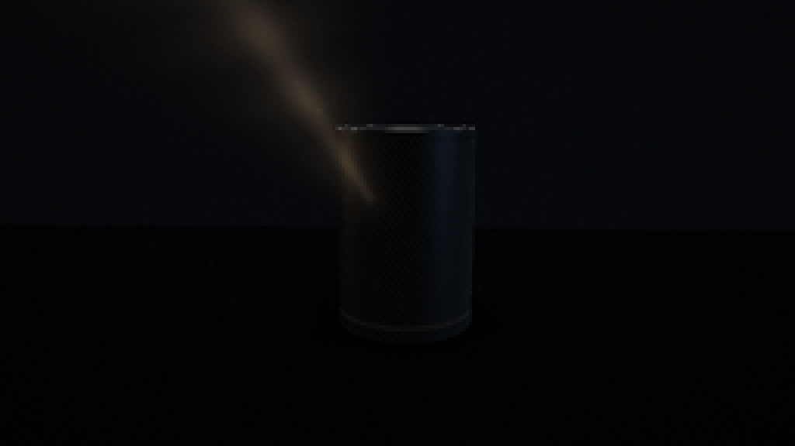
视觉工具实际返回图片 3
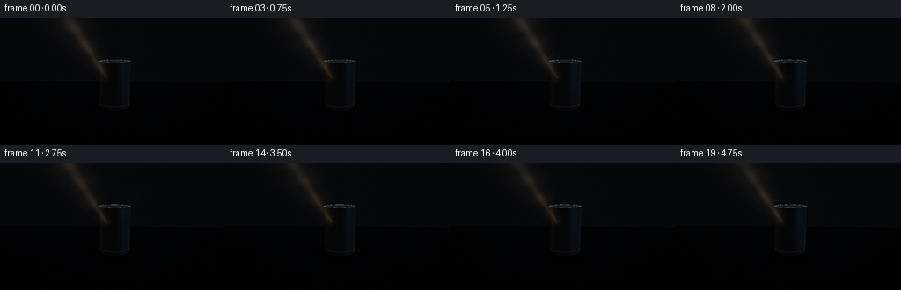
视觉工具实际返回图片 4
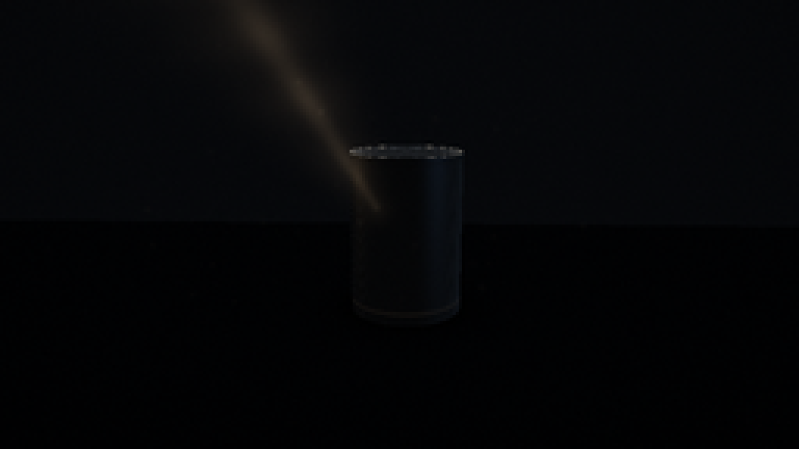
视觉工具实际返回图片 5
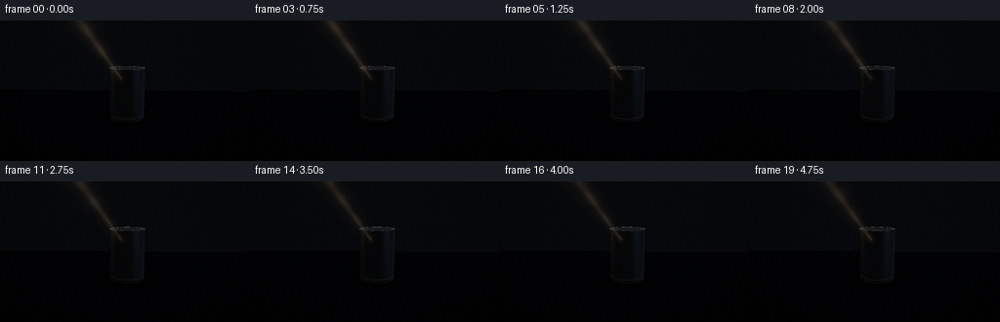
视觉工具实际返回图片 6
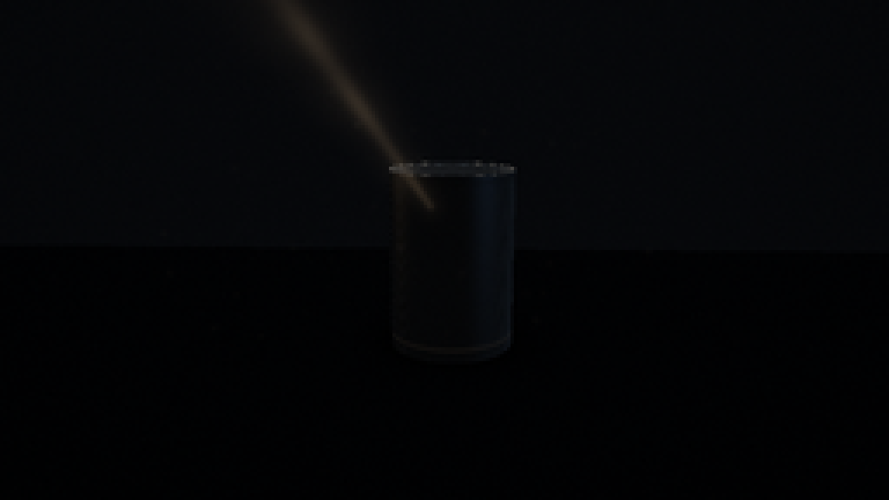
视觉工具实际返回图片 7

视觉工具实际返回图片 8
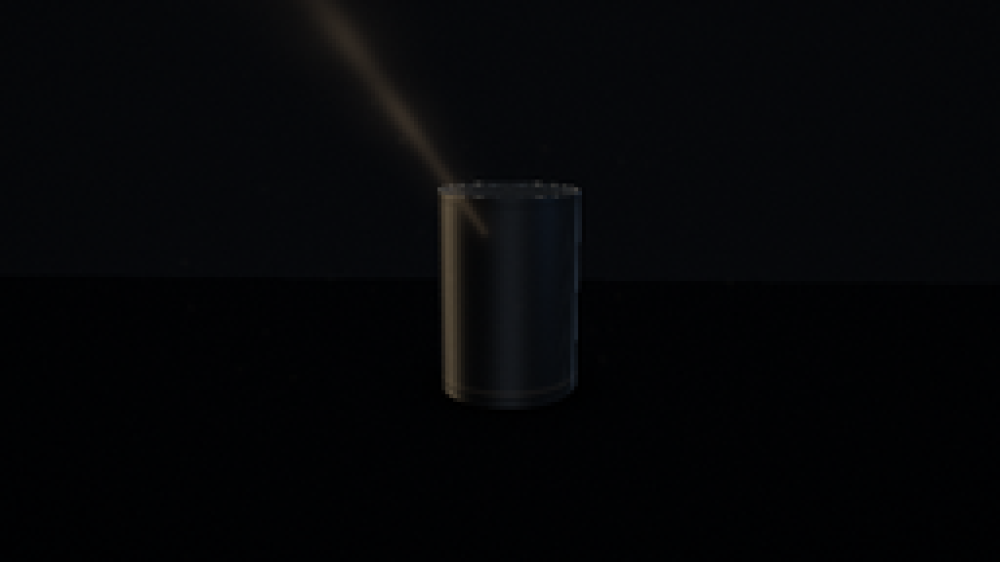
视觉工具实际返回图片 9
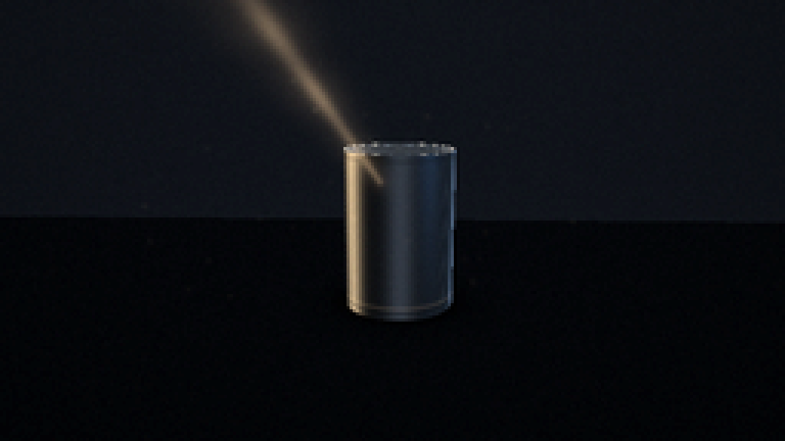
视觉工具实际返回图片 10
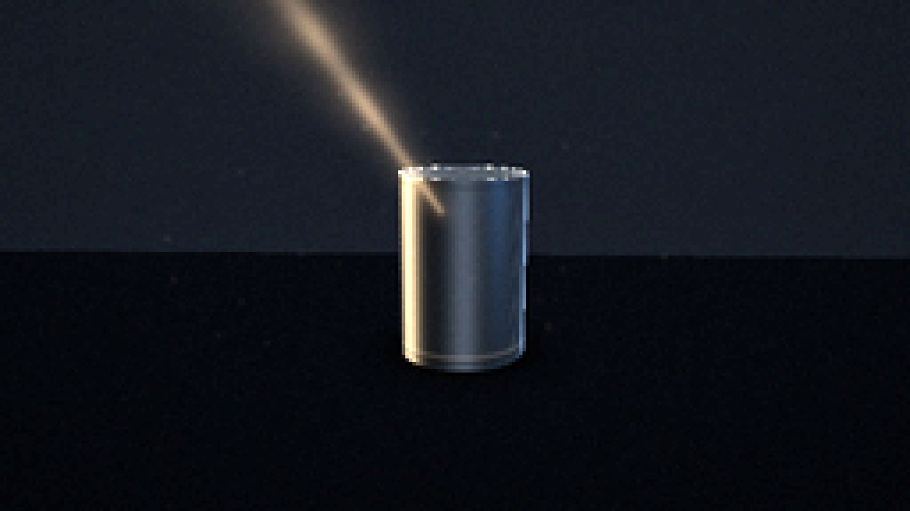
视觉工具实际返回图片 11

视觉工具实际返回图片 12
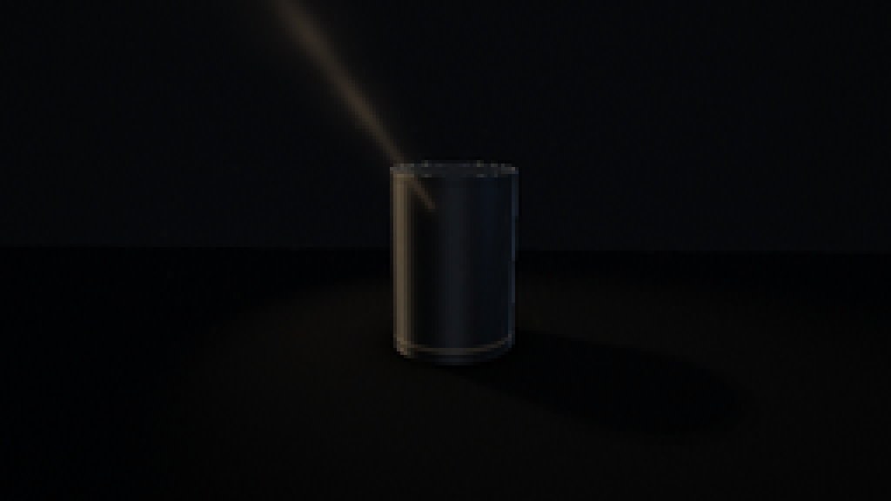
视觉工具实际返回图片 13
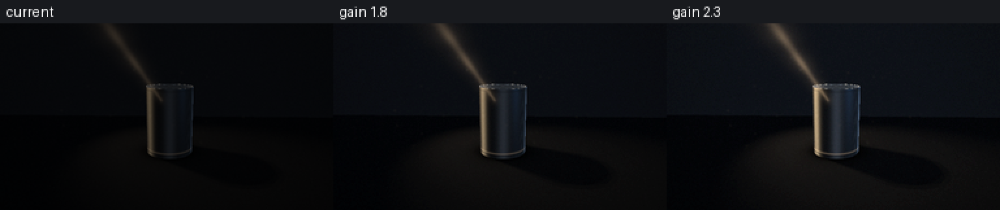
视觉工具实际返回图片 14
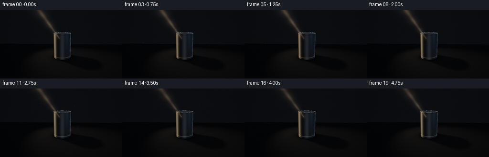
视觉工具实际返回图片 15
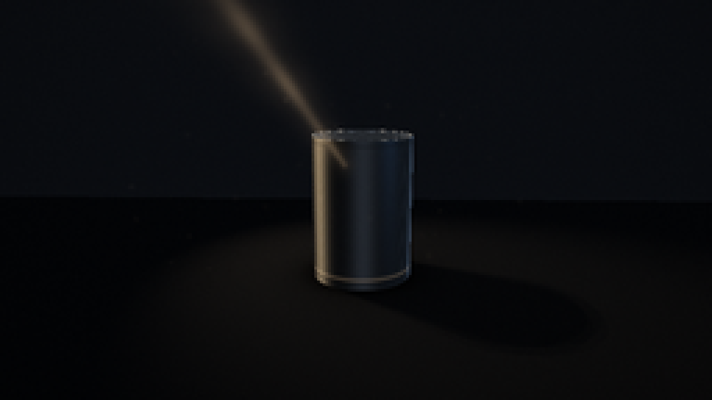
保存候选 9 份；完成命令 29 次；可验证图片返回 15 张。原始 API 响应与完整日志保留在本地。